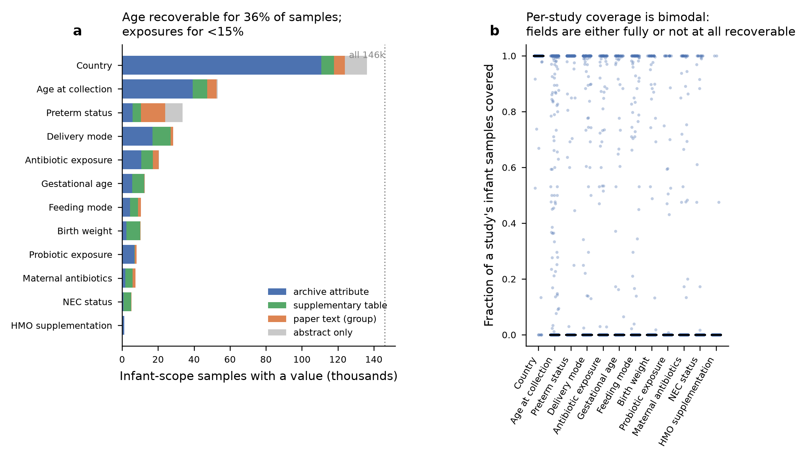

Infant Gut Shotgun-Metagenome Catalog
A curated, evidence-linked catalog of every public shotgun-metagenome study of the human infant gut (0–36 months) in the INSDC archives (ENA/SRA/DDBJ), with per-sample metadata recovered from archive attributes, supplementary tables and papers. Every value carries a verbatim evidence quote, a route (R1–R4) and a confidence.
389
included studies (BioProjects)
153,701
samples
174,022
sequencing runs
606,023
sample × field determinations with evidence
37%
of infant-scope samples with age at collection (53,802)
0.991
age precision vs 3,346 independently curated samples
9,579
studies screened (9,138 excluded, 52 in human review)
373
cohorts (410 linked papers)
Find a study, cohort or accession
Sample and run accessions are looked up in the Sample explorer; studies and cohorts are matched client-side against a small index.
Studies
389 included BioProjects with per-study pages, links, coverage and downloads. Cohorts
373 cohort clusters grouping studies and papers that share subjects. Sample explorer
Filter 153,701 samples in the browser; download any slice as CSV or parquet; inspect evidence per value. Fields & data dictionary
Every column, vocabulary, coverage and route mix. Screened universe
9,579 candidate studies with status and exclusion reason. Methods & caveats
Enumeration, triage, four evidence routes, audits and gold evaluation. Downloads
The complete data package, individual tables and the getting-started notebook.
389 included BioProjects with per-study pages, links, coverage and downloads. Cohorts
373 cohort clusters grouping studies and papers that share subjects. Sample explorer
Filter 153,701 samples in the browser; download any slice as CSV or parquet; inspect evidence per value. Fields & data dictionary
Every column, vocabulary, coverage and route mix. Screened universe
9,579 candidate studies with status and exclusion reason. Methods & caveats
Enumeration, triage, four evidence routes, audits and gold evaluation. Downloads
The complete data package, individual tables and the getting-started notebook.
Field coverage

Infant-scope samples with a value for each field, coloured by evidence route (a), and per-study coverage fractions (b). Numbers per field are in Fields.
Route legend
| Route | Evidence | Scope |
|---|---|---|
| R1 | archive sample attribute or sample-name convention | per sample |
| R2 | supplementary table row keyed to the study's own accessions or library names | per sample (or per subject) |
| R3 | statement in the paper text applied to a defined group | group |
| R4 | abstract / ENA description statement (confidence ≤ 0.5) | group |